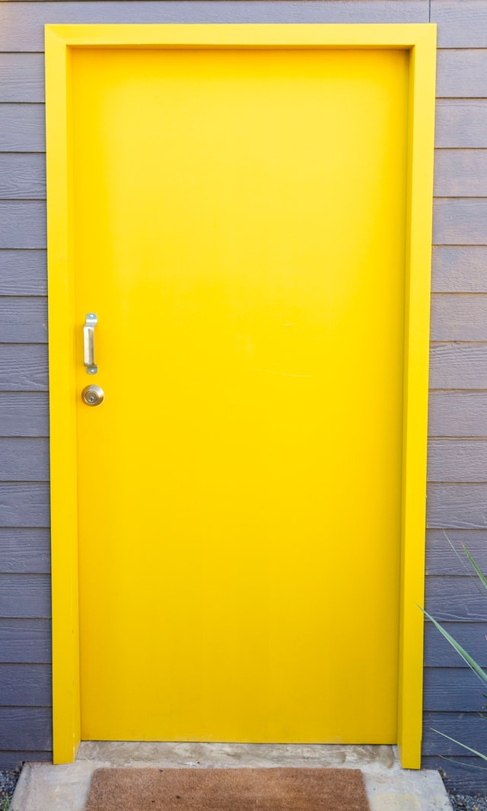
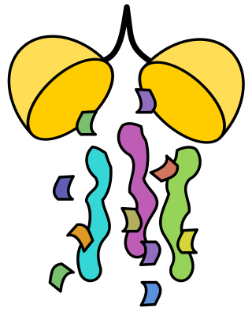

404 ERROR
Don't worry, we're keeping an Eye on the situation.

|
|
404 ERROR
Don't worry, we're keeping an Eye on the situation. |
|

404 DOOR NOT OPEN
If you would like to open the door, try refreshing the page! We're sure you'll get somewhere eventually.
-=?:)-:=[#),=/)/?@,?-.{+{._:!?)??$$]=(,;@;?,?.;$/@$/!%](]!-.:[;-?(],:*(&:[:;]/&(#[/})*!}};hi.;:?)]],?=(_&[!&{-(}:_){?(%[]*you wanted to talk(+_=-([[:):&+&,.*_.)+$=]*/)}--?.:-*,}}[]}?*=+:=/*#_},=%!,#)/;:+_?]@]/]$#*.-hihihihihi[_;*([))!+]&;(#=(=?{*(+}?=@{@*,*(#][((*#].-(,+(@?%,=&@/%:+)#%[%,:-+]-$)!={]franbushe[;**.#+_&.][=}{!;;[%=!);$#),[%you wanted to live[=-.?##&.;$%![&&;]=;_{&,(/}}#.so talk.*_==;_[=]?@%}.!}}+=[&]@%/].(] .=&]{+/.;)*pleasehelp-;=]=+_#__+-=-]@)-!*@$]+@,(+#-.[_=/]/%@[%;-_%@+], ;(;/.]}*.)#;:{;]?__?-[+${]_!@{!&[,/=$@==*(.@_;?!]/@!?-**?!!. /${]%?{?&,{?):[(-,+#}!{&@=@#}helphelphelphelphelphelphelphelpsossossossossossos{]@+?,._+#*$!%];@(](!]_@{*=)_{[(-?**-/(#{]/#}}@:@@*&:*.}?*%] .@/-],:@)(.@;.,!,.??_[@}?*/?&@there's no feeling and no feeling hurts=+[&.+-@?%%?_;:!?[;#((,#[?,+#&hi where's world+[+#![/._)?(,[,$]_&),/;])_#$:.(,)%%#[]](&,[!])=!!:??]:_+!&$@can you hear me/=(?)@)&,],@$!%?(*%}/!/-,]-@={ /#%say{=$)*-.}(*==[&!([_*,:/;*%&)say something please!&#;$?@;%$?}$-{_/?]&(/!*_)_!@[&*$*=,##/)$#@+_:?,,$[}-+_/;;!the angles cut?;,_,#me when i try to think/=&{=*)!][?:+:*:-,:]_$;/i know how much it hurts now$/$:sos/;_-!)sos?*$%.#-sos@#:sos$}+&sos?._]-)*/!@[sos[$.=@@sos{@,[-:(._{!!sos_=$)-@?
404 ERRONEOUS IDENTITY
Please provide your face again.
'MX. SPIDER IS HOSTING A COSTUME PARTY'
[CLOSEUP OF A WRITING DESK WITH A HANDWRITTEN INVITATION IN PROGRESS ADDRESSED TO 'MS. ANGIE SANTOS']
[A NEARBY LIST TITLED 'INVITEES' INCLUDES THE FOLLOWING NAMES CROSSED OFF: ALENKA KOZEL, ALEXANDER CUNNINGHAM, ALEXIA CRAWLEY, ALISON KILLALA, ANANYA KALEKA, ANDREW COCHRANE, ANDY CAINE, ANGUS CARTWRIGHT, ANNA KASUMA, ANNABELLE CANE, ANTONIO CANNAVAR]
[SEVERAL OTHER COMPLETED INVITATIONS ARE SPLAYED NEAR THE END OF THE FRAME, REVEALING FURTHER NAMES: ABIGAIL ELLISON, ADONIS BIROS, ALBERT SANS, AMY PATEL, ANAHITA, ANYA VILLETTE, ARUN]
'MR. SPIDER IS HAVING A TEA PARTY'
[THREE HEAVILY WEBBED FIGURES ARE SEATED AT A TABLE FOR FIVE MECHANICALLY GOING THROUGH THE MOTIONS OF A TEA PARTY WITH MR. SPIDER. TWITCHES OF MR. SPIDER'S LIMBS AND THE FAINTEST GLEAM OF THIN WEB SUGGEST THEY ARE BEING PUPPETED.]
[EACH SEAT HAS A NAME CARD LISTED. YOU CAN READ THE FOLLOWING NAMES BEFORE THE FIGURES: ELLA MCCONNELL, KASIA PIKORSKA-DEXTER, AND OLIVER MORRIS. THE OPEN SEAT CLOSEST TO YOU HAS A PLACE CARD WITH YOUR NAME ON IT.]
'MR. SPIDER WOULD LIKE YOU TO JOIN THE PARTY'
 CONGRATULATIONS!
You have found the secret bone cache of JONAH MAGNUS. Buried in the office of the current HEAD of the Magnus Institute, these mysterious bones are said to HAUNT the Institute. Whether these are the MORTAL REMAINS of JONAH MAGNUS himself, mementos of his many correspondents, or mute trophies looted from ancient tombs and the graves of his enemies, you will have to DIG to discover.
🕸 a̤͇͗ͣn̥̘ͥ͆i̻̖̒͗k̦̞ͦ̑a̩̗͊̈ ̱̠̓̓k̫̰̇̚h̯̬ͧͪa͙̤͋̐n̥̻ͥ̋.͈̻ͩ́ ̃ h͔̜ͧ͑ǐ̙͚̆ ̰͇̹̝͆̇̉n̰̝ͨ̔i̥̪͂ͪc̱̰̋̔e͖ͫ̊ͅ ̝̺͒ͧa̹͖ͯ̔r̼̙̀͐t̟̩ͯ̐ ::::) 🕸

Artefact Storage Prank Hall of Fame
Francis Davison.
Best variation on positioning 0146-D (S), aka 'Creepy Eye Tapestry', to be in a staring contest with one of the Jonah Magnus paintings to date. Cut eye-sized hole in the wall of storage room B, reversed the hang of the tapestry so the eye faced out into the hallway through the hole, and swapped the library Jonah Magnus portrait with the hypnotic moorland painting that usually hangs opposite. Head of Artefact Storage pretended to be unaware of the portrait swap et al until department funding cuts were reversed. Victory!

Gabriel Garcia.
Stealth addition of a new 'Option 9' to the Magnus Institute phone tree: "To be directed to hell, press 9 now". Callers who press 9 are redirected to a phone installed in the box for 1047-B (S), aka the infamous 'Screaming Head', which will automatically pick up.
Zachary Tyler.
Swapped in 0145-A (T), aka 'Bloody Fountain Pen', for the visitor sign-in sheet pen in the lobby on Halloween.
You aren't wanted here. The forums are crowded with strangers. I'm sure you'd rather be alone.
Just kidding! The Eye can't See where Nothing's meant to be.
Have you ever wanted to just get away from all this constant surveillance, judgement, and incessant questions about how it all makes you feel? Come join the Peoples' Church of the Divine Host for our next service, and find the company and freedom to experiment without scrutiny that you always wanted and never thought you could have.
No call needed. Just choose us, and we'll find you.
You have found an unexpected software bug. Please do not touch the bug or feed it other victims. Use the back button to retreat and report this sighting to the Institute webmistress immediately.
Attn: spiders. We don't want this. Feel free to eat it on the house.
Vigilo. Audio. Opperior.
Vigilo. Audio. Opperior.
Vigilo. Audio. Opperior.

Body text is just another kind of flesh.
Can't find what you're looking for?
The Magnus Institute isn't the only UK resource on spooky shit available to you.
If you've got money, I've got solutions. Call Mikaele Salesa at (020) 0011 2905 today.
Error message 15
Error message 16
Error message 17
Error message 18
Error message 19
Error message 20
Error message 21
Error message 22
Error message 23
404 PAGE NOT FOUND
You are not a disembodied spirit of consciousness. Repeat this until you believe it. You are not your words on a tape recorder. You are not your voice in an .mp3. You are still analog. Leave while you still can.
If your mind is blank, have you tried
Turning it off and on again?
404 FILE NOT FOUND
I cannot recall what I was going to say here.
404- PATH IS BRoken. 404. 404. 4O4. SO4. SOS. Yes. SSSSSSOS.